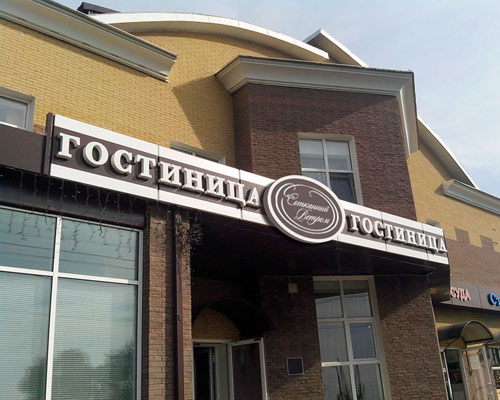
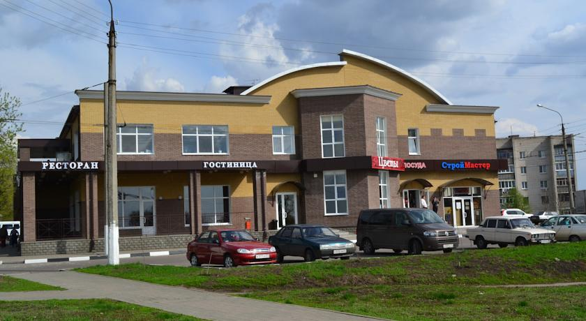

Отель "Сотканный ветром" расположен прямо на трассе М2,
которая соединяет Москву и Симферополь.
Белгород находится в 5 км от отеля.
Отель функционирует с 2013 года.
Уютные и светлые номера ждут своих гостей!
В отеле 12 номеров, вмещающих от 1 до 3 человек.
В каждом номере кондиционер и телевизором с плоским экраном.
А так же собственная ванная комната с душем и бесплатными туалетными принадлежностями.
Подробнее о номерах смотрите
ЗДЕСЬ
на ней можно воспользоваться факсом и услугами по ксерокопированию.
Питание осуществляется по заказу
за дополнительную плату.
Центральный железнодорожный вокзал Белгород находится в 9 км от отеля «Сотканный ветром»,
услуги трансфера предоставляется за дополнительную плату.
Расстояние до украинской границы составляет 30 км.
- 
Главный фход
- 
Отель "Сотканный ветром"
 Номер на двоих
Номер на двоих Ванная комната
Ванная комната Номер на двоих
Номер на двоих Номер на двоих - стандарт
Номер на двоих - стандарт Номер на двоих + 1
Номер на двоих + 1 Номер на двоих
Номер на двоих Номер на троих
Номер на троих